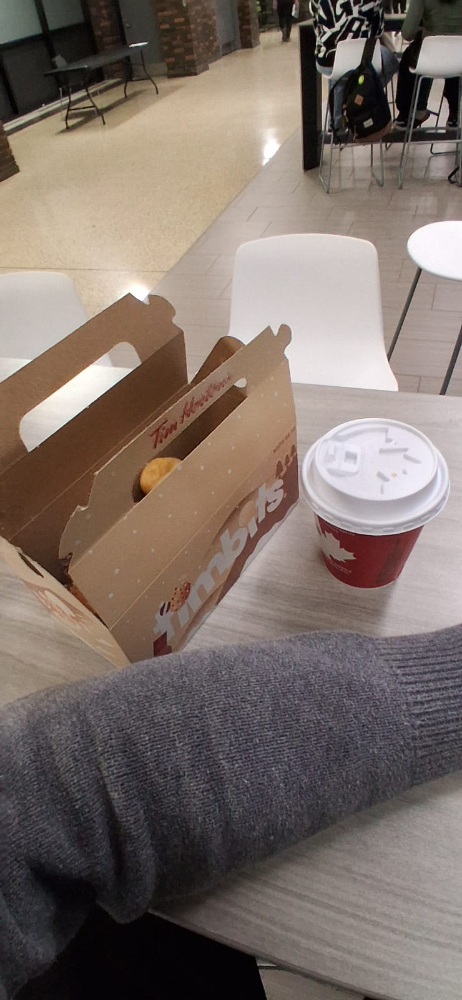
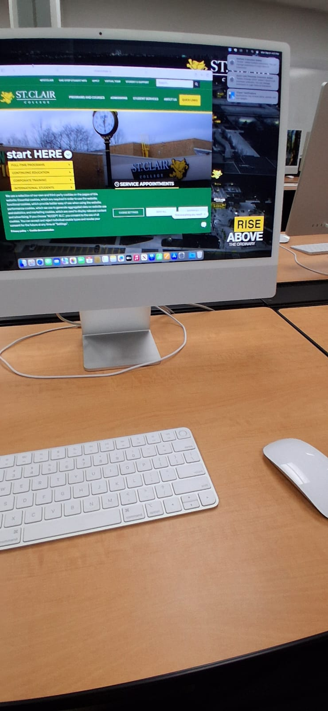
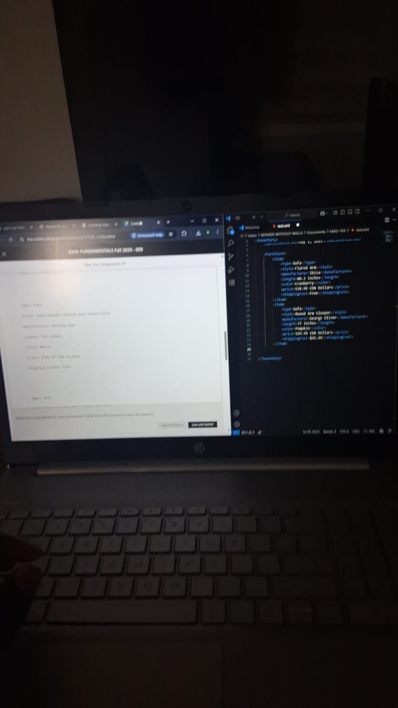
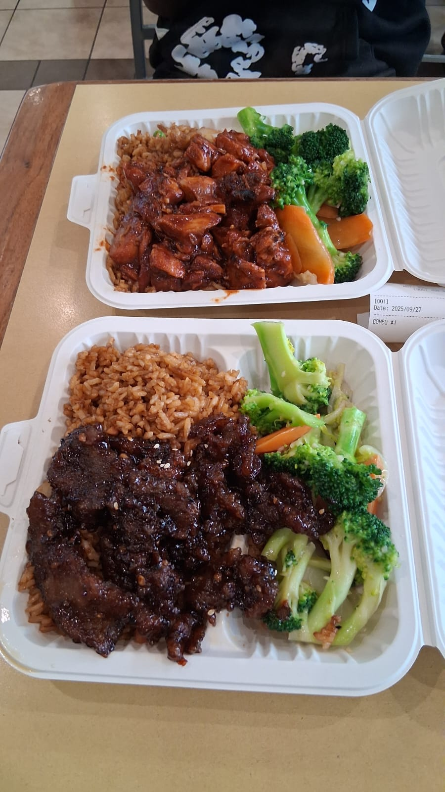
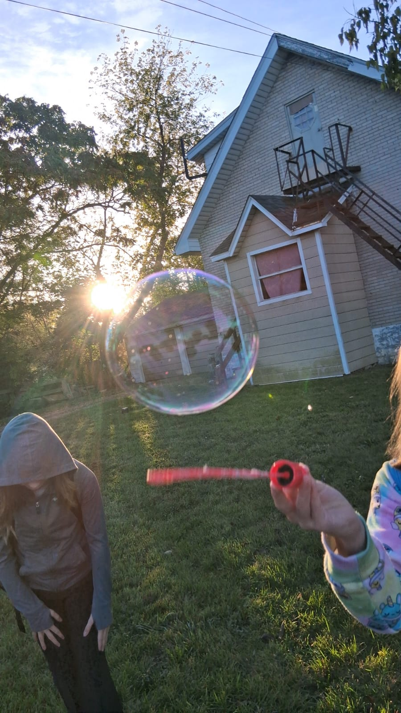

Education



I am currently enrolled at St Clair College learning Computer Programming, where I’ve been learning how to design, develop, and troubleshoot software applications. This program has provided me with a solid foundation in different programming languages, networking, web design/development, and database management that will help me in my future career.
Prior to college, I completed my high school education at Central peel Secondary School, where I developed a strong interest in technology and computer science. I took several computer-related courses that helped sparked my passion for programming and software development.
Interests and Hobbies
Outside of my studies, I have a variety of interests and hobbies that keep me engaged and motivated. I enjoy listening to music, playing video games, and exploring new places and food whenever I get the chance. I find that these activities help me relax and recharge, allowing me to stay focused on my studies. Sports and physical activities are also important to me, as they help me maintain a healthy lifestyle and improve my overall well-being. One of my favorite sports to watch and play is basketball, which I find both exciting and challenging.


